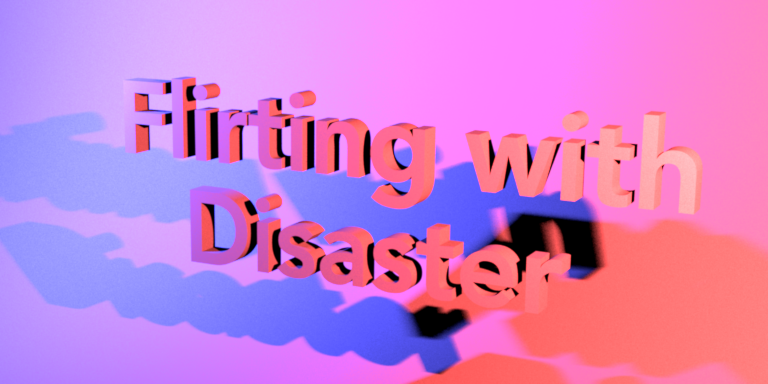
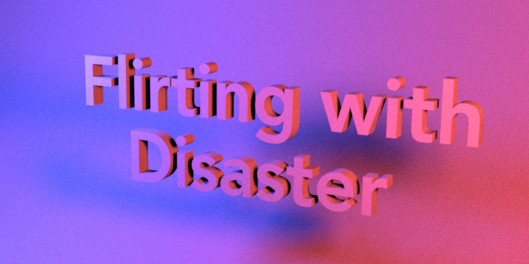
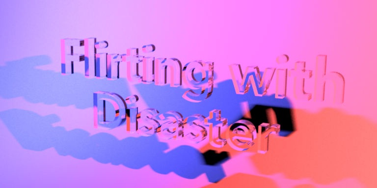
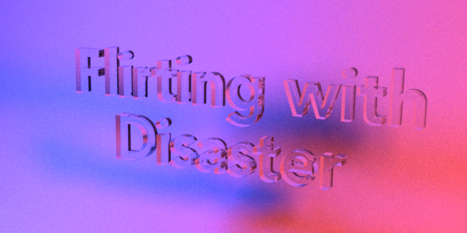
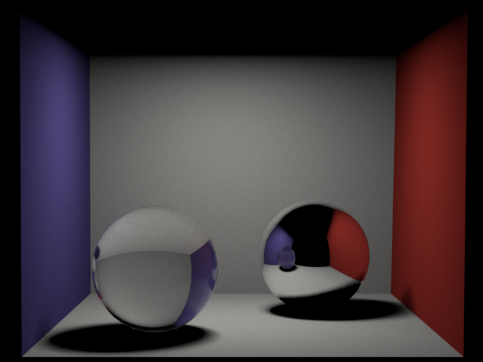
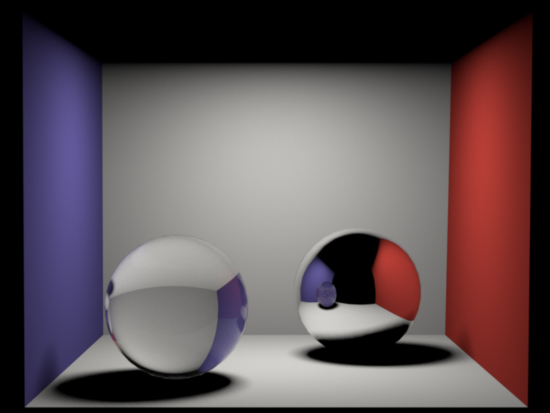

**Programming Assignment 4 - Distributed and Whitted-style Ray Tracing**
Feedback
========
This has been the most toughestt assignment so far. It was not clear on what exactly was expected. More explanation could have worked better in understanding the problem. Also, making own structures was tedious and calling them correctly too. Though, learning in this assignment has been the most.
Exercise writeup
================
**Part 1 and 2: Area Lights and Distribution Ray Tracing**
Design Choices
1. Area is a class that is the child class of Emitter class and performs the sampling of the position on the triangles on the mesh of the area lights that is the emitter. Firstly, the mesh class is used to get the proportion of the surface area of the triangle to the entire surface area of the mesh. This is used for pdf.
2. Area class randomly samples the triangle to be sampled from the mesh and then the warping function is used to sample the point on the triangle chosen. The position is further found after interpolating surface normal at sampled position and compute the per-vertex normals or the face normals if the per-vertex normals are not provided by the mesh.
3. Sampled pdf is inverse of area of the entire emitter mesh.
4. Whitted integrator is used to first get only the meshes that are emitters and then points are sampled on these meshes where the meshes are randomly chosen. Then area class is used to sample on the emitter, radiance is calculated and using the monte carlo rendering equation, final outgoing radiance to the camera is found to be shaded.
Challenges
1. I still don't intuitively understand the barycentric coordinate system and why interpolation is needed.
Underneath is the comparison between my rendered image and the given reference image when rendering is done using area lights.


Code running screenshot is also attached beneath:
![Figure [1]: Area Lights Running](images\mottodiffusecode.png)
**Part 3 and 4: Dielectrics and Whitted-style Ray Tracing**
Design Choices
1. The fresnel term is used to check whether reflection or refraction will occur. Random sampling of reflection or refraction occurs and accordingly, w_o or w_t is calculated. w_o is calulated if reflection occurs else w_t is calculated. Computing w_t makes use of snells law.
2.
3. If the mesh is not a diffuse mesh instead sampling happens on the scene itself and dielectric class is used to compute the bsdf of the material. Further, another random sample is used to adjust the radiance to the camera and shade as per the question.
Challenges
1. When step-wise snells law is applied, some random image is generated where transparency is seen in the depth but the front face of the scene, that is the text here appears black. What is the reason, could be just the normals, whose intuition is not clear.
2. If refraction is occuring, first step would be checking the direction of the normal if it is in the hemisphere or outside. The refractive indices of the materials will have to be changed accordingly so that refractive coefficient is not negative.
Underneath is the comparison between my rendered image and the given reference image when rendering is done using whitted-style ray tracing.


Code running screenshot is also attached beneath:
![Figure [2]: Whitted-style Ray Tracing for Dielectric Material](images\mottodielectriccode.png)


Code running screenshot is also attached beneath:
![Figure [3]: Whitted-style Ray Tracing for Cbox](images\cboxcode.png)
Other Details
================
**Challenges**
1. For the dielectric material, performing a brute force way of applying the Snell's law for calculating the w_t does not render the right scene. The reason I can think of is the normals and the dot/cross products while using them. Though, that was not understandable. Could you go through the exact functioning of the when to take the dot product and coordinate system in nori, it would really help. I could also schedule an appropriate time as I have faced this with all 3 assignments so far but haven't been able to clarify.
**Time spent on each task**
*Task 1*
Understanding what is being expected
15 hours
*Task 2*
Area Light Source
12 hours
*Task 3*
Distribution Ray Tracing
12 hours
*Task 4*
Dielectrics
10 hours
*Task 5*
Whitted-style Ray Tracing
5 hours
*Task 6*
Documentation
2 hours